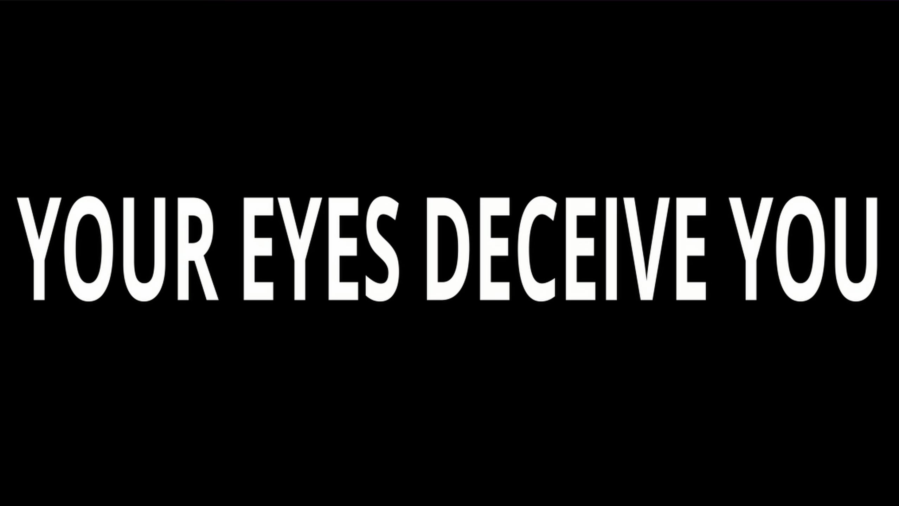
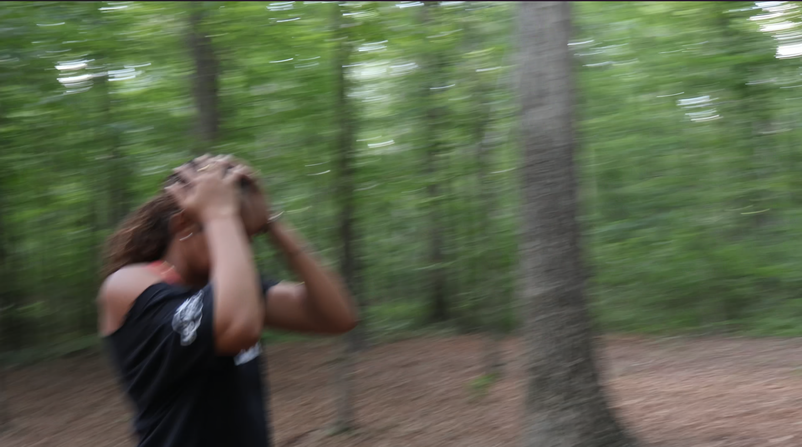
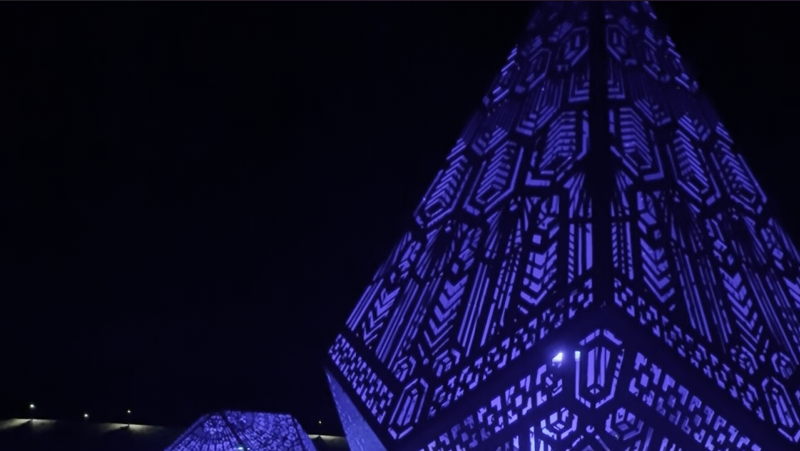

Introduction
Nearly Crazy transforms Gertrude Stein’s A White Hunter into an unsettling exploration of paranoia, perception, and uncertainty. Through repetition, sound-synchronized editing, and deliberate visual misdirection, the film encourages viewers to question everything—even their own perception. Rather than presenting a stable narrative, the film invites multiple interpretations instead of a single definitive explanation.
The Hunter: Misdirection

The film begins by showing a man aiming a rifle in the woods. This opening scene suggests that the hunter will become the film's primary antagonist. However, this expectation is quickly subverted as the hunter never appears again. Instead of serving as exposition, the opening functions as deliberate misdirection. It leaves viewers uncertain whether the hunter represents a literal threat, a symbolic figure, or merely an idea.
"A white hunter is nearly crazy."
— Gertrude Stein, Tender Buttons (1914)
Like Stein’s poem, the film withholds essential narrative information. Neither work explains who the hunter is, why they are “nearly crazy,” or whether the threat exists externally or psychologically.
Perception and Doubt

Immediately following the opening sequence, the audience encounters the brief statement "YOUR EYES DECEIVE YOU." Because the message appears for only a moment, viewers may question whether they actually read it correctly before it disappears. Instead of simply communicating information, the text actively undermines the audience’s confidence in their own perception.
Throughout the film, abrupt cuts, repeated interruptions, and subtle changes between shots reinforce this feeling of uncertainty.
The Forest: Calm and Anxiety


The forest plays a central role in driving the film’s narrative forward. The protagonist wanders through what initially appears to be a tranquil environment. These calm moments are repeatedly interrupted by frantic first-person camera movement. The constant switching between peaceful observation and anxious perspective shifts leaves viewers disoriented and without resolution.
Camera Movement and Sound

Camera movement plays a significant role in creating psychological tension. Instead of relying on static compositions, the film uses handheld movement and controlled camera shake. As the protagonist moves through the woods, the unstable camera mirrors her anxious emotional state.
The sound design further reinforces uncertainty. Musical cues are sparse, leaving the viewer without an emotional guide. Instead, the film uses drone-like sounds, heartbeat effects, and low-frequency tones to build tension without revealing the exact source of danger.
The Lamp: Fragmented Reality

The lamp is perhaps the film’s most intriguing visual motif. Its geometric design and unnatural purple light appear disconnected from the forest narrative. However, its repeated interruptions prevent viewers from dismissing it as random. Like Stein’s fragmented language, the image resists a single interpretation. Its meaning is never explicitly explained, requiring viewers to construct their own understanding.
Evaluation
Although Nearly Crazy successfully translates Stein’s ambiguity into film, some creative choices communicate the filmmakers’ intentions more effectively than others. The opening shot strongly implies that the armed man is the hunter, encouraging viewers to interpret the young woman as the prey. While this may differ from the filmmakers’ intended narrative, it ultimately strengthens the film’s connection to Stein’s experimental style by allowing multiple readings to coexist.
Conclusion
Nearly Crazy succeeds because it captures the spirit of Stein’s Tender Buttons rather than attempting to explain it. Through fragmented editing, expressive camera work, restrained sound design, and recurring visual motifs, the film transforms a single enigmatic sentence into an equally enigmatic cinematic experience. By translating Stein’s language experiments into visual and auditory form, Nearly Crazy demonstrates how ambiguity itself can become a powerful storytelling technique.